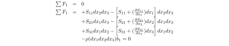
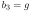
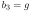

Next: Calculation of horizontal stress Up: Constitutive equation: stress-strain relationships Previous: The isotropic solid in Contents
Porous solids deform and fail due to the application of effective stresses rather than total stress. Hence, Hooke's law requires to use the effective stress tensor rather than the total stress tensor:
|  (incorrect) |
 (correct) (correct) |
Pore pressure has an effect on normal stresses only (fluid pressure would not be able to cause solid shear strains). Hence, only pore pressure is subtracted from the diagonal terms of the total stress tensor. The subtracted value is the same in all directions because pore pressure is the same in all directions at a given point location.
Rigorously, the effective stress tensor needs a correction of pore pressure by the Biot coefficient  that accounts for solid grain deformation with changes in pore pressure.
that accounts for solid grain deformation with changes in pore pressure.
 |
(3.21) |
For most problems, the assumption of
 is satisfactory.
The rock matrix of tight sandstones and shales may have a Biot coeffiecient as low as
.
The theory of poroelasticity is covered in the “Advanced Geomechanics” course with a brief introduction in Section 3.7.1.
is satisfactory.
The rock matrix of tight sandstones and shales may have a Biot coeffiecient as low as
.
The theory of poroelasticity is covered in the “Advanced Geomechanics” course with a brief introduction in Section 3.7.1.
![\includegraphics[scale=0.55]{.././Figures/split/4-26.pdf}](img313.svg)